Coloque o telefone no chão ao lado da vítima e mantenha as mãos livres.
Protocolos Rápidos de TAS:
Suporte Básico de Vida
Compressões Torácicas Contínuas a 110 bpm
Profundidade de 5 a 6 cm no centro do esterno com descompressão torácica completa. Rácio de 30:2 ou compressões contínuas se leigo sem máscara.
Sequência Oficial de Abordagem (Manual TAS):
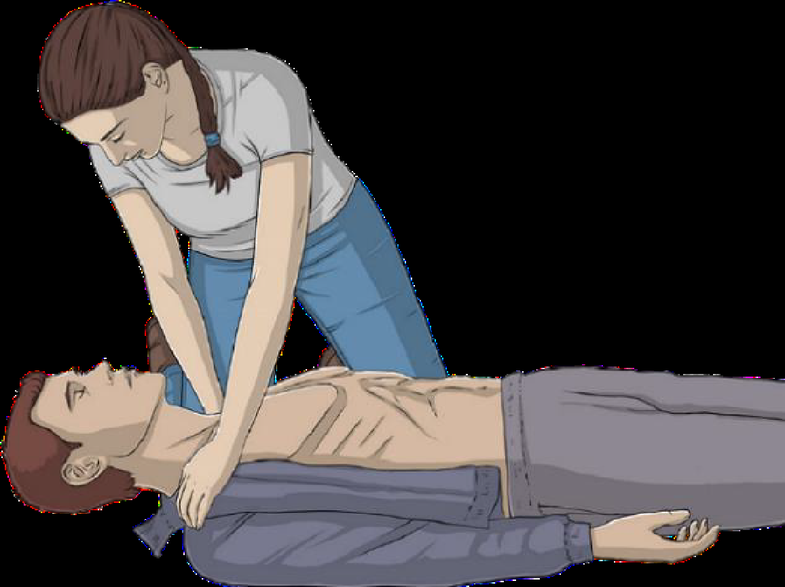
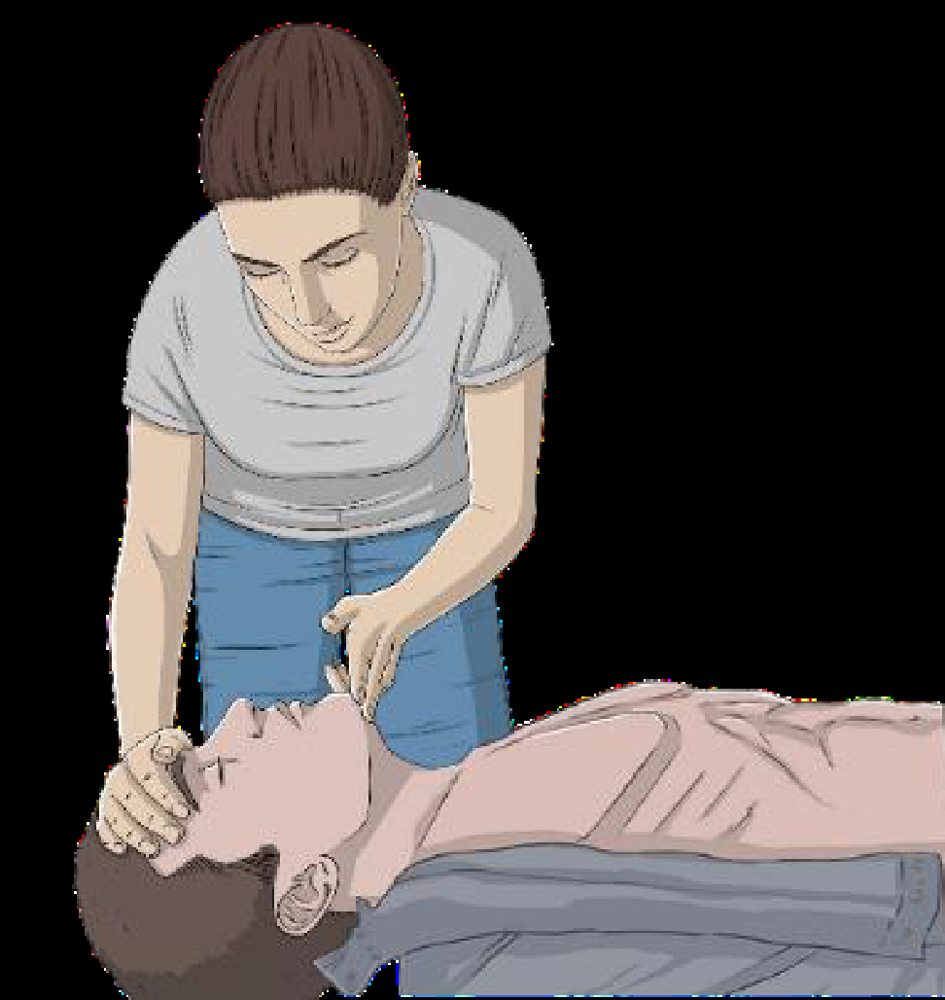
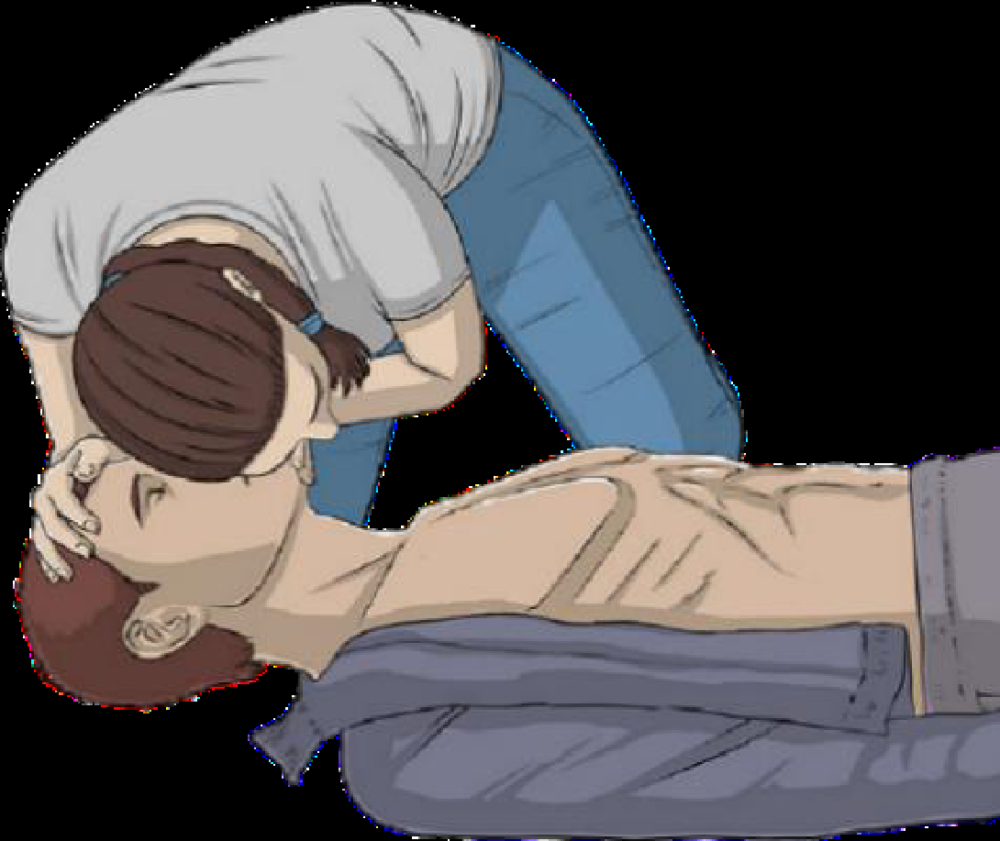
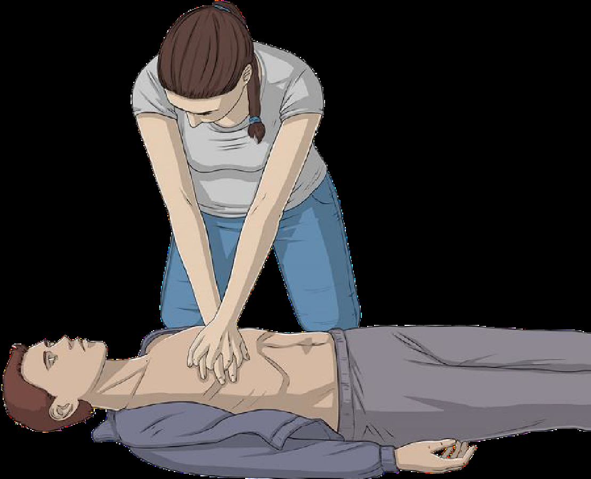
Assim que o DAE estiver disponível, ligue-o e aplique as pás adesivas no tórax despido. Siga as instruções de voz do aparelho.
Dispneia / Falta de Ar Aguda
Coloque a vítima sentada ou com a cabeceira elevada a 45º-90º. NUNCA deite uma pessoa com falta de ar (aumenta o trabalho dos pulmões e agrava a asfixia!).
Abra portas e janelas. Afaste curiosos para o ar circular. Desaperte golas de camisa, gravatas, cintos ou soutiens.
O pânico duplica o consumo de oxigénio. Peça para inspirar pelo nariz e expirar devagar pela boca como se estivesse a soprar uma vela.
Se houver botija e máscara de oxigénio com operador de socorro/TAS, administre O2 a débito adequado.
- Cianose: Lábios, língua ou unhas azuladas/arroxeadas.
- Fala entrecortada: Incapacidade de dizer uma frase completa sem parar para respirar.
- Tiragem respiratória: Músculos do pescoço ou costelas a afundar com esforço extremo.
- Sons anormais: Pieira forte ("assobio no peito") ou silêncio respiratório repentino.
- Alteração do estado de consciência: Confusão, agitação extrema ou sonolência.
Obstrução da Via Aérea (OVA)
Consegue tossir e falar. Apenas encoraje a tossir. Proibido bater nas costas!
Não consegue falar nem respirar. Atue já com a sequência 5 + 5.
Sequência Oficial 5 + 5 (Manual TAS):
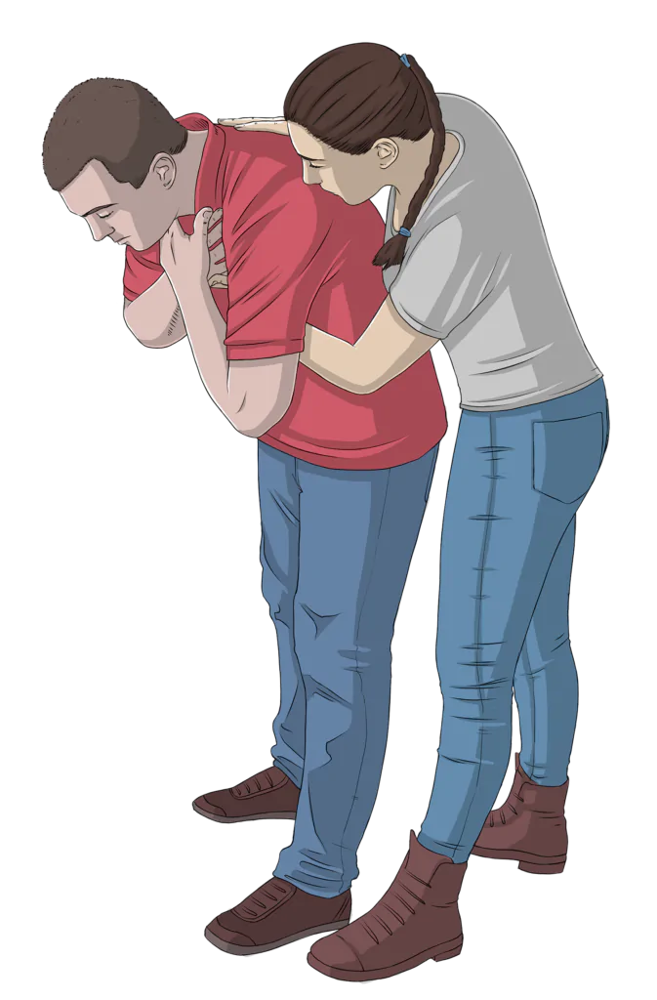
Incline a vítima bem para a frente com apoio no tórax e aplique pancadas secas entre as omoplatas.
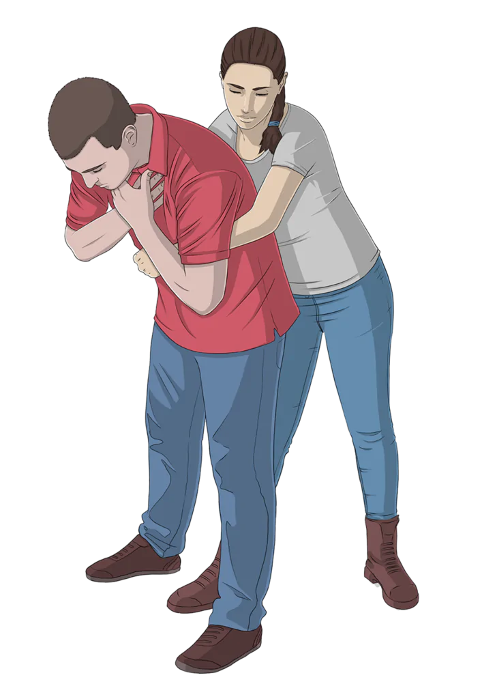
Abrace por trás, punho fechado acima do umbigo, puxe com força para dentro e para cima.
Trauma & Hemorragias Graves
Hora de aplicação não registada
⚠️ Regra de Ouro do TAS: Uma vez aplicado o garrote, jamais deve ser aliviado até à chegada dos meios diferenciados (risco de choque hipovolémico ou libertação de toxinas).
Protocolo de Controlo de Hemorragias (Manual TAS):
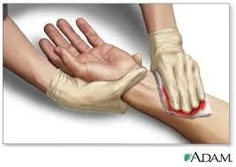
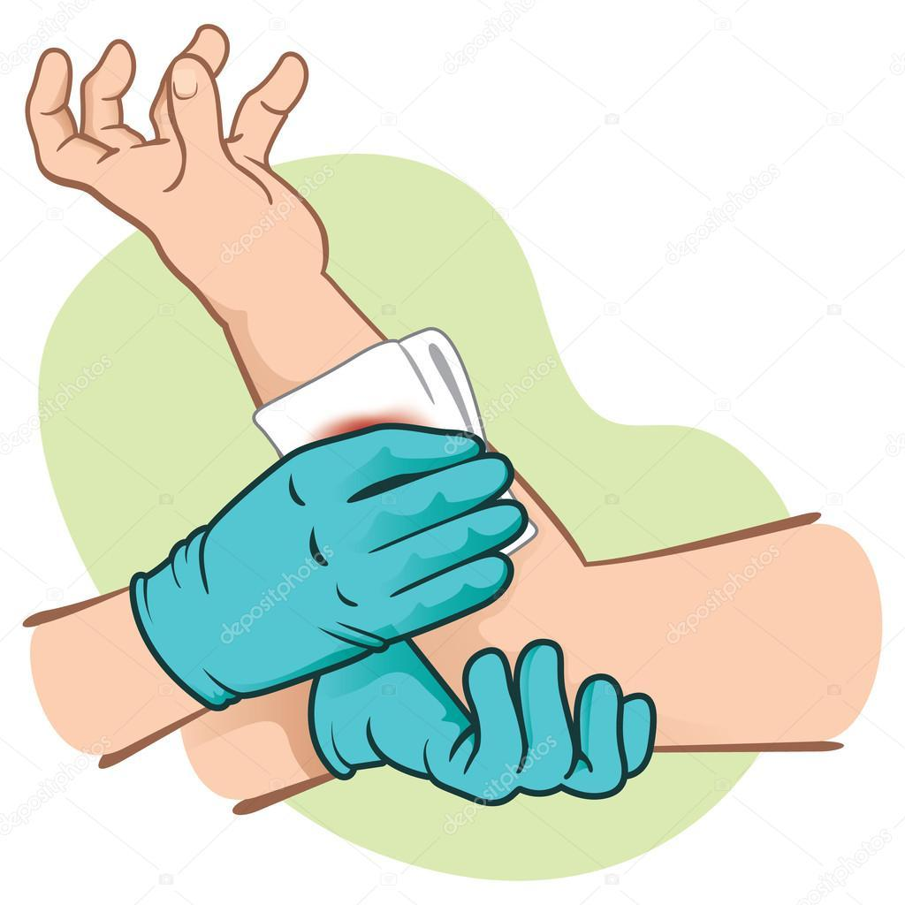
- Palidez acentuada e pele fria ou suada.
- Pulso muito rápido e fraco ("filiforme").
- Sede intensa, tonturas ou desmaio iminente.
- Confusão e agitação progressiva.
Protocolo de Queimaduras
Água corrente suave (entre 15°C a 20°C). Nunca use gelo direto nem água gelada.
Classificação Visual de Queimaduras (Manual TAS):
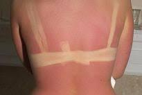
Rubor (vermelhidão), calor e dor. Não há bolhas. Arrefecer e hidratar.
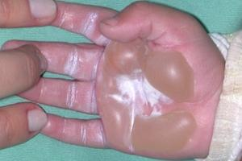
Dor intensa e bolhas com líquido (flictenas). Proibido rebentar bolhas!
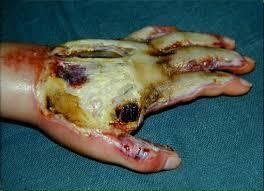
Necrose esbranquiçada ou acastanhada. Não dói devido à destruição das terminações nervosas. Urgência hospitalar imediata.
Suspeita de AVC (Via Verde)
Hora dos primeiros sintomas não marcada
A janela de trombólise hospitalar é de apenas 4,5 horas. Cada minuto conta!
Teste Rápido dos 3 «F»:
Peça para a pessoa sorrir. Um lado da boca fica descaído?
Peça para levantar ambos os braços por 10 segundos. Um braço cai?
Peça para repetir uma frase simples. A fala sai enrolada ou incompreensível?
Se pelo menos 1 destes 3 testes for positivo, ligue imediatamente 112 e transmita a hora de início dos sintomas.
Crise Convulsiva & PLS
O que fazer durante e após a crise:
Proteja a cabeça. Afaste objetos perigosos. NUNCA meta nada na boca (não prenda a língua) e não segure os movimentos com força.
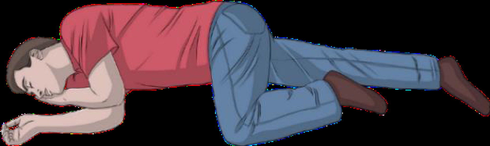
Mantém a via aérea limpa e previne aspiração de vómito.
- Crise com duração superior a 5 minutos (Estado de Mal Epiléptico).
- Segunda crise consecutiva sem recuperar a consciência entre elas.
- Traumatismo craniano sofrido durante a queda.
- Vítima grávida ou sem antecedentes de epilepsia.
Assistente IA de Socorro
• Disponibilidade e Tráfego: Este assistente utiliza a API do Google Gemini (Modo Gratuito). O seu funcionamento está sujeito a critérios de rede, conectividade e momentos de congestionamento de tráfego global da Google, podendo não estar sempre disponível em tempo útil.
• Nunca Atrasar o Socorro 112: A IA é uma ferramenta complementar e não deve em caso algum atrasar o socorro. Em paragens cardiorrespiratórias (PCR), asfixia grave, acidentes violentos ou qualquer suspeita de risco de vida, ligue 112 de imediato e não aguarde pela IA.
«Em caso de dúvida ou se o sistema demorar, ligue 112 imediatamente.»
Ficha Médica ICE
Os seus dados nunca saem deste aparelho. Preencha uma vez e a app memoriza-os para sempre, adaptando a triagem da IA e permitindo alertar familiares em segundos.
Nome da Vítima
Alergias: Nenhuma
Antecedentes: Nenhum
Medicação: Nenhuma
Familiar (ICE): Não definido
Manual de Formação & Autoestudo
Manual prático de autoestudo e consulta rápida em primeiros socorros, concebido para uso universal por cidadãos, socorristas e formandos. Conteúdos rigorosamente alinhados com as diretrizes e algoritmos mais recentes de SBV e OVA (Diretrizes 2025 ERC / INEM) e o Manual de Tripulante de Ambulância de Socorro (TAS). Toque nos capítulos para expandir os módulos e teste os seus conhecimentos no quiz interativo.
O que é o SIEM?
O Sistema Integrado de Emergência Médica (SIEM) é o conjunto articulado de meios e ações extra-hospitalares, hospitalares e inter-hospitalares programados para atuar com rapidez e eficácia perante acidentes, catástrofes ou doenças súbitas, sob coordenação do INEM e dos seus Centros de Orientação de Doentes Urgentes (CODU).
Meios de Resposta do SIEM em Portugal:
- Ambulâncias de Socorro (ABSC): Tripuladas por Bombeiros ou Cruz Vermelha Portuguesa (CVP), com Tripulantes de Ambulância de Socorro (TAS).
- Ambulâncias de Emergência Médica (AEM): Afetas diretamente ao INEM com Técnicos de Emergência Pré-Hospitalar (TEPH).
- Motociclos de Emergência Médica: Meio ágil com TEPH para triagem rápida e SBV em meio urbano de tráfego denso.
- Ambulâncias SIV (Suporte Imediato de Vida): Tripuladas por Enfermeiro e TAS, equipadas para medicação e via aérea avançada.
- VMER (Viatura Médica de Emergência e Reanimação): Equipa hospitalar diferenciada (Médico e Enfermeiro) para suporte avançado de vida no local.
- Helicópteros de Emergência Médica (SHEM): Resgate rápido e transporte inter-hospitalar de doentes críticos a longas distâncias.
O Protocolo P.A.S. (Princípios Gerais do Socorrismo):
Antes de se aproximar, avalie criteriosamente a segurança do cenário (trânsito, eletricidade, fuga de gás, risco de incêndio ou desabamento). Use Equipamento de Proteção Individual (luvas descartáveis e máscara). Regra de ouro: se o local não for seguro, não entre — um socorrista ferido torna-se uma segunda vítima!
Ligue 112 e forneça dados objetivos ao operador: ONDE (morada exata, rua, número de polícia, sentido de trânsito e pontos de referência conspícuos); O QUÊ (tipo de evento: colisão, queda, doença súbita); QUEM (número aproximado de vítimas, sexo e idade aproximada); e ESTADO (inconsciente, com hemorragia, sem respirar). Nunca desligue a chamada antes do operador autorizar!
Inicie as medidas básicas de preservação de vida (estancar hemorragias exsanguinantes, desobstrução da via aérea ou SBV) sem agravar lesões existentes até à chegada dos meios diferenciados.
Avaliação Primária: Sequência X-A-B-C-D-E
Destina-se a identificar e corrigir de imediato as condições que ameaçam a vida a curto prazo:
Controlo prioritário e imediato de hemorragias arteriais massivas externas antes da via aérea (pressão direta firme ou colocação de garrote/torniquete).
Verificar se a via aérea está desimpedida. Pesquisar corpos estranhos, secreções, vómito ou próteses dentárias soltas. Em vítimas de trauma, manter rigoroso alinhamento neutro e estabilização bimanual da coluna cervical.
Avaliar frequência (FR normal adulto: 12 a 20 ciclos/min; bradipneia < 10 cpm, taquipneia > 20 cpm, taquipneia severa > 35 cpm), amplitude torácica, simetria e ruídos respiratórios (pieira, estridor, gorgolejo). Pesquisar sinais de insuficiência respiratória (tiragem, respiração paradoxal, cianose).
Avaliar pulsos periférico e central (frequência cardíaca normal: 60-100 bpm; bradicardia < 60 bpm, taquicardia > 100 bpm). Avaliar Tempo de Preenchimento Capilar (normal < 2 segundos). Avaliar pele: cor (pálida, cianótica), temperatura e humidade (suada/viscosa).
Escala de resposta neurológica rápida:
- A (Alerta): Vítima lúcida, orientada no tempo e espaço.
- V (Voz): Responde apenas a comandos verbais sonoros.
- D (Dor): Reage apenas a estímulos dolorosos (pressão no trapézio).
- S (Sem Resposta): Totalmente inconsciente e sem reação.
Avaliação Pupilar:
- Isocóricas: Ambas de tamanho normal e diâmetro simétrico (normal).
- Anisocóricas: Diâmetros desiguais (suspeita grave de Traumatismo Crânio-Encefálico ou AVC hemorrágico com hipertensão intracraniana).
- Miose: Ambas contraídas / puntiformes (intoxicações por opiáceos/organofosforados).
- Midríase: Ambas amplamente dilatadas (hipóxia cerebral grave, PCR iminente/instalada).
Expor áreas corporais estritamente necessárias para procurar fraturas ou feridas ocultas, salvaguardando a dignidade da vítima. Cobrir logo de seguida com manta térmica ou agasalho (a hipotermia despoleta a tríade mortal no trauma).
Avaliação Secundária: Mnemónica C.H.A.M.U.
História clínica colhida junto da vítima consciente ou testemunhas presenciais:
Caracterização da Dor: Mnemónica T.I.L.I.D.A.S.
T (Tipo de Dor): Aperto, pontada, facada, cólica, queimadura ou peso?
I (Intensidade): Escala de dor de 0 (sem dor) a 10 (dor máxima insuportável).
L (Localização): Onde dói exatamente (tórax, abdómen, coluna, cabeça)?
I (Irradiação): A dor corre para algum sítio (braço esquerdo, costas, mandíbula)?
D (Duração): Há quanto tempo começou a doer de forma contínua?
A (Alívio / Agravamento): A dor melhora ou piora com repouso, respiração ou mudança de posição?
S (Sintomas Associados): Náuseas, suores frios, vómitos, tonturas ou sensação de desmaio?
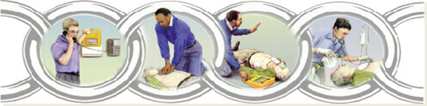
- Alerta 112 com Alta-Voz Imediato: Se estiver sozinho com smartphone, ligue 112 e ative o alta-voz no primeiro segundo. Inicie as compressões torácicas sem demora enquanto fala com o operador do CODU, indicando a morada exata e pontos de referência conspícuos.
- Reconhecimento de Gasping: Respiração lenta, ruidosa, agónica ou com pausas prolongadas não é respiração normal! É sinal de PCR e exige início imediato de 30 compressões torácicas.
- Compressões Torácicas de Alta Qualidade: Metade inferior do esterno, 5 a 6 cm de profundidade no adulto, cadência constante de 100 a 120 bpm e retorno elástico total do tórax após cada compressão.
- Troca aos 2 Minutos (5 Ciclos): Rotação obrigatória de reanimadores a cada 2 minutos para prevenir a fadiga muscular e a perda inconsciente de eficácia e profundidade das compressões.
- DAE Precoce: Ligar logo que chegue à vítima, aplicar pás no tórax despido e afastar todos durante análise e choque. Retomar compressões imediatamente após o choque.
- SBV Pediátrico: Paragem primariamente hipóxica/respiratória. 5 insuflações iniciais obrigatórias antes das compressões, rácio 15:2 e compressão de 1/3 do diâmetro torácico (~4 cm no lactente com 2 dedos e cabeça neutra; ~5 cm na criança com 1 ou 2 mãos).
Algoritmo de SBV no Adulto (Passo a Passo com Fotos Reais):
Abanar suavemente os ombros e perguntar em voz alta e clara: «Está a ouvir-me? Sente-se bem?»
Se não responde, colocar uma mão na testa e a ponta dos dedos da outra mão sob o queixo (mento), estendendo a cabeça para afastar a língua da parte de trás da garganta.
Aproximar o rosto da boca da vítima, olhando para o peito: VER se o tórax sobe e desce, OUVIR os sons respiratórios, SENTIR o ar expirado na face durante no máximo 10 segundos.
⚠️ Atenção Vital: Ruídos ruidosos, gaspejo ou respiração agónica lenta (gasping) não são respiração normal! Indicar paragem cardiorrespiratória (PCR).
Colocar a base da mão no centro do peito (metade inferior do esterno), entrelaçar a outra mão por cima com dedos elevados. Braços completamente verticais e cotovelos esticados.
• Profundidade: 5 a 6 cm no adulto.
• Ritmo: 100 a 120 compressões por minuto (use o metrónomo acústico da app).
• Permitir o retorno elástico total do tórax após cada compressão sem tirar as mãos do peito.
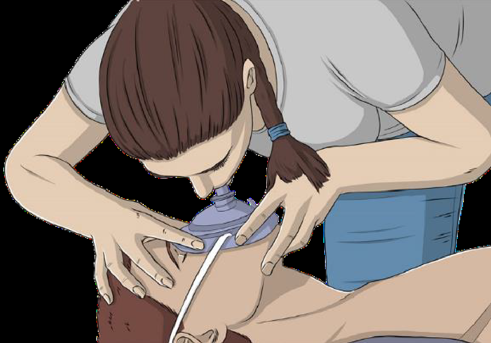
Manter a via aérea aberta, pinçar o nariz com o polegar e indicador, selar completamente a boca em redor da boca da vítima e insuflar durante 1 segundo até verificar elevação suave do peito.
• Se o socorrista leigo não tiver máscara de bolso ou não se sentir apto/seguro a insuflar, mantenha compressões torácicas contínuas sem qualquer interrupção!
Se a vítima estiver inconsciente mas a respirar com normalidade e sem suspeita de traumatismo na coluna, coloque-a em PLS para garantir a drenagem de vómito/secreções e manter a via aérea aberta. Vigiar a respiração a cada minuto.
Particularidades Críticas no SBV Pediátrico:
Na criança e lactente, a PCR tem origem quase sempre em hipóxia (asfixia respiratória) e não em fibrilhação primária de causa cardíaca:
- 5 Insuflações Iniciais Obrigatórias: Antes das compressões, forneça 5 insuflações lentas para oxigenar o sangue.
- Rácio 15:2: Em socorristas treinados, aplicar 15 compressões para 2 ventilações.
- Profundidade: 1/3 do diâmetro torácico (~4 cm no lactente < 1 ano; ~5 cm na criança > 1 ano).
- Técnica no Lactente (< 1 ano): Compressão com 2 dedos ou 2 polegares no terço inferior do esterno; cabeça em posição neutra (sem hiperextensão).
- Técnica na Criança (1 ano até puberdade): Com 1 ou 2 mãos consoante a compleição da criança.
- Socorrista Solitário: Efetuar 1 minuto de SBV (cerca de 5 ciclos) antes de se afastar para ligar 112 se não tiver telefone consigo.
Desfibrilhador Automático Externo (DAE):
Ligue o aparelho de imediato logo que chegue. Cole os elétrodos no tórax despido e seco (um sob a clavícula direita e outro no flanco esquerdo). Siga escrupulosamente as ordens de voz. Gere silêncio e garanta que ninguém toca na vítima durante a análise do ritmo e o choque! Retome as compressões torácicas sem demora imediatamente após o choque.
- Tosse Eficaz: A vítima tosse ativamente, fala ou chora. Conduta exclusiva: apenas encorajar a tossir. PROIBIDO bater nas costas ou fazer compressões abdominais (pode desalojar o objeto e causar obstrução total!).
- Tosse Ineficaz Consciente: Não consegue falar, tossir ou respirar; mãos ao pescoço (sinal universal de asfixia); ruídos agudos ou silêncio total. Aplicar a sequência 5 pancadas interescapulares (tronco bem inclinado para a frente) alternadas com 5 compressões de Heimlich (puxão para dentro e para cima em "J").
- Casos Especiais 2025: Em lactentes (< 1 ano), grávidas e obesos mórbidos, a manobra de Heimlich é contraindicada (risco de rotura de órgãos internos) e é substituída por compressões torácicas. No lactente: 5 pancadas nas costas (bebé deitado de bruços no antebraço, cabeça mais baixa) + 5 compressões torácicas no esterno com 2 dedos.
- Vítima que Perde a Consciência: Amparar suavemente ao solo, ligar 112 imediatamente e iniciar logo 30 compressões de SBV (a compressão mecânica cria pressão positiva intratorácica que mobiliza o corpo estranho para a boca).
- Regra do Varrimento: Ao ventilar, inspecione a cavidade oral e retire o corpo estranho apenas se visível e acessível. Nunca faça varrimento cego às cegas com os dedos.
Avaliação da Eficácia da Tosse:
A vítima tosse fortemente, fala, chora e respira.
Atuação: Apenas encorajar a tossir. Proibido bater nas costas ou comprimir o abdómen, pois isso pode desalojar o objeto e encravá-lo totalmente!
A vítima não consegue falar nem tossir, emite ruídos agudos, agarra o pescoço com ambas as mãos (sinal universal de asfixia) e desenvolve cianose.
Atuação: Iniciar imediatamente a sequência 5 + 5!
Sequência 5 + 5 no Adulto e Criança (> 1 ano):
Coloque-se ao lado da vítima, apoie o peito com uma mão e incline o tronco bem para a frente para que o objeto saia pela boca pela ação da gravidade. Aplique até 5 pancadas secas com a base da mão entre as omoplatas. Verifique se o objeto se soltou a cada pancada.
Se as pancadas falharem, posicione-se atrás da vítima e envolva a cintura com ambos os braços. Feche o punho de uma mão e posicione-o entre o umbigo e o apêndice xifoide. Agarre o punho com a outra mão e puxe com força para dentro e para cima (em "J"). Aplique até 5 compressões.
• Alterne 5 pancadas e 5 compressões abdominais sucessivamente.
Casos Especiais: Lactentes, Grávidas e Vítima Inconsciente:
Deitar de bruços no antebraço do socorrista com a cabeça mais baixa que o corpo. Aplicar 5 pancadas nas costas. Voltar de costas e aplicar 5 compressões torácicas no esterno com 2 dedos. Nunca fazer compressões abdominais de Heimlich em bebés (risco de rotura de órgãos internos)!
Substituir as compressões abdominais por compressões torácicas no esterno (mesmo ponto do SBV, empurrando o esterno vigorosamente para trás).
Amparar suavemente até ao chão, ligar 112 e iniciar imediatamente 30 compressões torácicas. Antes de ventilar, espreitar a boca: retirar o objeto apenas se estiver visível e solto; nunca fazer varrimento cego às cegas com os dedos!
1. Dispneia e Crises Respiratórias (Asma / DPOC):
Dificuldade em respirar, sensação de sufoco, pieira ("assobios"), aumento acentuado do ritmo respiratório e uso dos músculos do pescoço.
Posicionamento de Fowler Obrigatório: Sentar ou semi-sentar a vítima (tronco elevado a 45°-90°). Jamais deitar na horizontal uma pessoa com falta de ar (o retorno venoso aumenta a congestão pulmonar e provoca asfixia postural).
Arejamento: Abrir janelas, afastar aglomerações e desapertar golas, gravatas e cintos.
Oxigenoterapia: Se disponível e se o operador for socorrista/TAS credenciado, administrar O2 a débito adequado para manter saturação estável.
Regra de Segurança: Não administrar medicação de SOS por iniciativa do socorrista leigo. Ajudar apenas o próprio doente a manusear o seu inalador pessoal prescrito se ele assim o solicitar.
2. Dor Torácica & Enfarte Agudo do Miocárdio (EAM):
Ocorre pela oclusão aguda de uma artéria coronária com morte de células do músculo cardíaco (isquemia e necrose).
Sintomas Típicos: Dor retrosternal em aperto profundo, peso ou constrição no peito que dura mais de 10-15 minutos e não alivia com a posição; irradiação para o braço esquerdo, mandíbula, pescoço ou costas; acompanhada de suores frios profusos, palidez acentuada, náuseas e sensação iminente de morte.
Atuação Imediata: Repouso absoluto e imediato (a vítima não pode andar nem fazer o mínimo esforço físico). Colocar em posição semi-sentada confortável, manter ambiente calmo, ligar 112 comunicando suspeita de EAM (Via Verde Coronária) e manter o DAE acessível.
3. Acidente Vascular Cerebral (AVC & Via Verde):
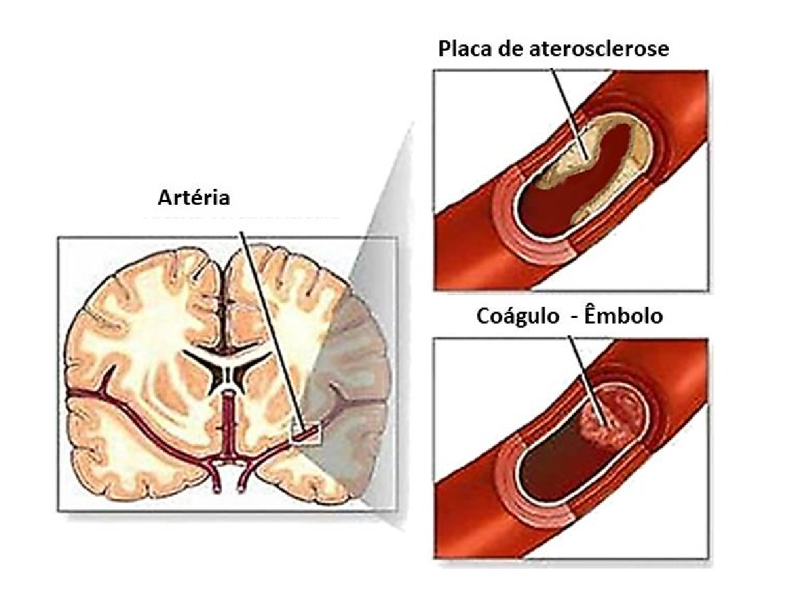
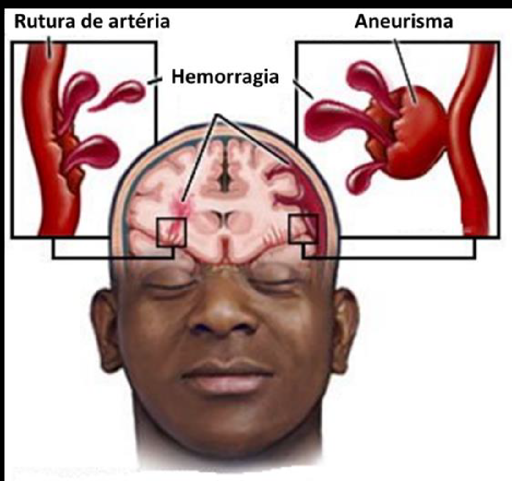
O Teste dos 3 «F» (Escala de Cincinnati):
- F - Face: Peça para a pessoa sorrir. Um dos cantos da boca fica descaído ("boca ao lado")?
- F - Força: Peça para levantar ambos os braços esticados durante 10 segundos. Um braço descai por fraqueza muscular?
- F - Fala: Peça para repetir uma frase simples. A fala sai enrolada, incompreensível ou com incapacidade total de articular?
Critério Via Verde: Se 1 dos 3 testes for positivo, ligue 112 imediatamente. Registe a hora exata em que a pessoa foi vista sem sintomas (a trombólise hospitalar tem uma janela restrita de 4,5 horas). Nunca dar alimentos, água ou medicamentos (o reflexo de engolir fica paralisado, causando asfixia fatal).
4. Crises Convulsivas & Epilepsia:
DURANTE A CRISE (Fase Tónico-Clónica): Perda súbita de consciência com abalos musculares descontrolados e rigidez. Cronometre a duração. Afaste mesas, cadeiras e objetos perfurantes. Apoie a cabeça da vítima com um casaco dobrado para amortecer o embate no chão. Desaperte roupas apertadas ao pescoço.
• NUNCA coloque colheres, panos ou os dedos dentro da boca (a língua não se engole e pode sofrer mordeduras ou amputação de dedos).
• NUNCA tente segurar os braços ou conter os movimentos com força (risco de fraturas ósseas).
APÓS A CRISE (Fase Pós-Crítica): Os abalos cessam, a vítima fica sonolenta e inconsciente. Se respira normalmente, coloque imediatamente em Posição Lateral de Segurança (PLS) para drenar saliva e manter via aérea limpa.
• Ligue 112 se: A crise durar mais de 5 minutos, se ocorrer uma 2ª crise consecutiva sem recuperar consciência, se a vítima estiver grávida ou se houver traumatismo craniano associado.
5. Alterações de Glicémia (Diabetes):
Hipoglicemia (< 60 mg/dL): Instalação súbita e fulminante. Sinais: palidez extrema, sudação fria e viscosa, tremores, sensação de fome intensa, fraqueza, irritabilidade/confusão e risco de coma.
• Vítima Consciente: Administrar água com 2 a 3 pacotes de açúcar bem dissolvidos ou sumo açucarado em pequenos goles.
• Vítima Inconsciente: JAMAIS dar líquidos (risco fatal de broncoaspiração). Colocar em PLS e ligar 112 com urgência.
Hiperglicemia (> 200 mg/dL): Instalação lenta e progressiva ao longo de horas/dias. Sinais: sede constante (polidipsia), urina excessiva, fadiga e hálito cetónico (odor a fruta fermentada).
6. Intoxicações e Envenenamentos:
Contacto Imediato: Ligue para o CIAV - Centro de Informação Antivenenos (800 250 250) ou 112.
Inalação de Gases: Retirar a vítima imediatamente para local arejado, salvaguardando a própria segurança do socorrista.
Contacto Cutâneo/Ocular: Lavar com água corrente abundante durante pelo menos 15 minutos.
1. NUNCA provocar o vómito (o cáustico volta a queimar o esófago e pode entrar nos pulmões).
2. NUNCA dar leite nem azeite (o leite acelera a absorção de químicos lipossolúveis).
3. Guardar embalagens, rótulos e restos do produto para apresentar aos médicos.
Controlo de Hemorragias Externas:
Tipos de Hemorragia:
• Arterial: Sangue vermelho-vivo que jorra sob pressão pulsátil ao ritmo do coração (perda rápida de volume sanguíneo).
• Venosa: Sangue vermelho-escuro que flui de forma contínua e sem pulsação.
• Capilar: Pequeno sangramento em toalha superficial (escoriações).
1. Aplicar compressas esterilizadas sobre o ferimento e comprimir firmemente com a mão durante 10 minutos. Se o penso ensopar, nunca o retire — coloque novas compressas por cima e continue a compressão.
3. Aplicação de Garrote / Torniquete: Exclusivo para amputações ou sangramentos arteriais maciços nos membros que não cedem à pressão direta. Colocar 5 a 7 cm acima da lesão, apertar o fuso até o sangramento parar, registar a hora e NUNCA aliviar o garrote até aos cuidados hospitalares definitivos!
Protocolo de Queimaduras:
Colocar imediatamente a queimadura sob água corrente tépida (entre 15°C a 20°C) durante 15 a 20 minutos seguidos para interromper a progressão térmica nos tecidos profundos.
Retirar com cuidado pulseiras, relógios e anéis antes do aparecimento do edema.
Cobrir a área com compressas esterilizadas humedecidas em soro e aplicar ligadura suave sem compressão.
• Nunca aplicar gelo direto (agrava a necrose tecidular por congelação).
• Nunca rebentar bolhas (flictenas).
• Nunca aplicar pasta de dentes, gorduras, azeite, álcool ou pomadas caseiras.
• Nunca arrancar roupas que estejam coladas à pele queimada.
Fraturas & Traumatismos Ósseos:
Sinais Indicativos: Dor aguda localizada, deformidade anatómica evidente, inchaço (edema), hematoma, mobilidade anormal ou crepitação ao toque e incapacidade funcional total de movimentar o membro.
Fratura Aberta vs Fechada: Na fratura aberta há rotura da pele com exposição dos topos ósseos ou ferida profunda comunicante (risco severo de infeção e hemorragia).
Atuação de Primeiros Socorros:
• Nunca tentar alinhar, puxar ou forçar o membro fraturado no socorrismo básico.
• Imobilizar o membro na posição exata em que se encontra, abrangendo obrigatoriamente a articulação imediatamente acima e a articulação abaixo da fratura.
• Aplicar frio indireto (saco com gelo envolvido em pano) durante 15 minutos para diminuir a dor e o inchaço.
• Em fraturas abertas, cobrir com compressas esterilizadas húmidas sem comprimir o osso e vigiar a circulação periférica na ponta dos dedos.